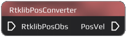
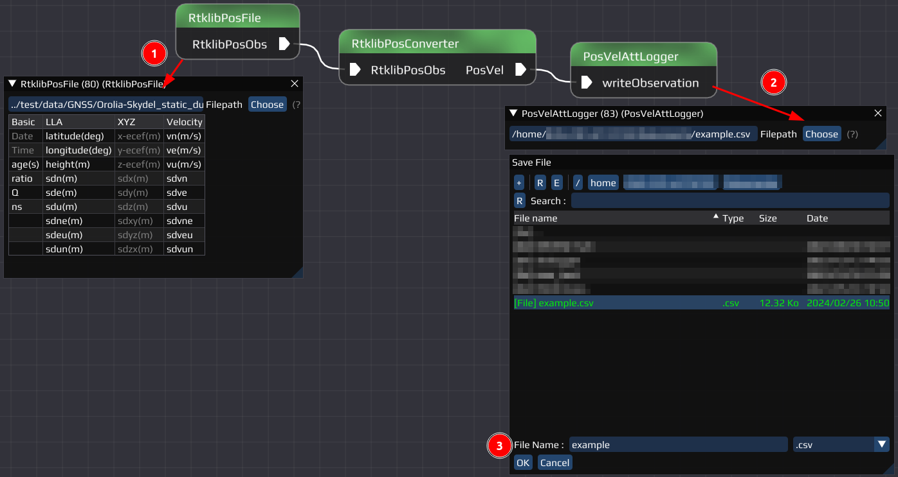

|
0.2.0
|
|
0.2.0
|

The RtklibPosConverter Node converts Rtklib pos-files into a flow containing position and velocity information.
The Node can't be configured.
If you don't know how to reproduce any of the explained steps, read the Getting Started first.
Let us convert a Rtklib position file in a csv file.
Required Nodes:
- RtklibPosConverter Node
- RtklibPosFile Node (RtklibPosFile Node)
- PosVelAttLogger Node (PosVelAttLogger Node)
Required Data
RTKLIB position file:
../test/data/GNSS/Orolia-Skydel_static_duration-4h_rate-5min_sys-GERCQIS_iono-none_tropo-none/RTKLIB/Septentrio-PolaRx5T_G.posRelative path, file included in INSTINCT
Steps
- Add the Nodes to your workspace
- Connect the RtklibPosFile Node with the input of the RtklibPosConverter
- Open the RtklibPosFile Settings
- Choose the file "Septentrio-PolaRx5T_G.pos" in INSTINCT/copy the relative path from above
- Connect the RtklibPosConverter output to the PosVelAttLogger
- Open the PosVelAttLogger Settings
- Select where the csv-file should be stored
- Run the Flow
- Check out the csv-file
Example of how the result should look like:

Last updated: 2024-02-26